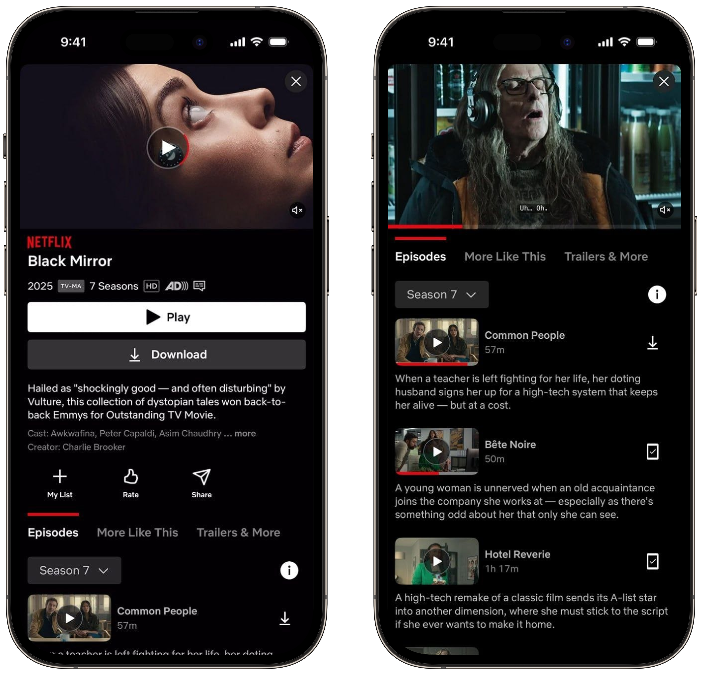
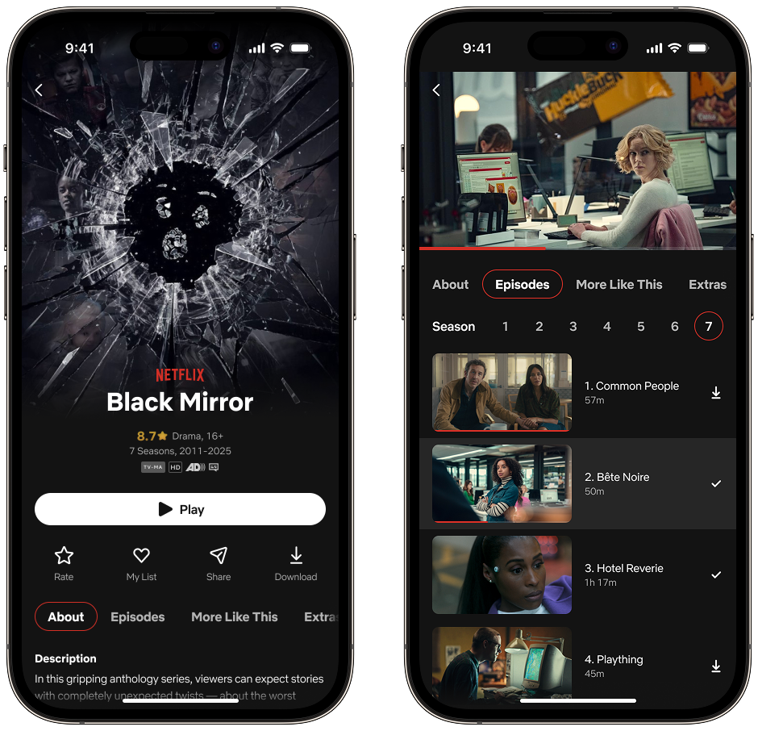

Фокус
- Быстрые решения
- Визуальная чистота
- Простые сценарии

Подборка концептов и быстрых
дизайн-экспериментов
Здесь собраны UI-кейсы, которые я делал, участвуя в дизайн-челленджах, или просто для развития насмотренности и UI-скилов.
Целью было проанализировать карточку сериала в приложении Netflix и предложить улучшенный вариант.

В приоритете было сделать дизайн более чистым и современным, при этом не потеряв функциональности.
На начальном экране сделал акцент на хиро-секции, чтобы был “вау” эффект при открытии карточки сериала: постер, под которым сразу считывается основная инфа и СТА. Второстепенные действия и навигацию сгруппировал ниже. Добавил раздел About, где находится описание, трейлер, актеры и тд.
Во втором состоянии фокус на контенте: добавил номера серий, убрал описания (они доступны в разделе About), увеличил превью до более читаемого размера, сделал выделение текущей серии и реализовал выбор сезона по одному тапу. В итоге пересобрал экран так, чтобы ничего не отвлекало и не перегружало пользователя, и чтобы все было просто, логично и аккуратно.

Страница будет пополняться новыми кейсами, заходите еще.